03 · Ciclo del agua
Aigües de Barcelona
La conexión con el proyecto está en los procesos que hacen circular el agua entre la ciudad y el medio natural: potabilización, desalación, depuración, regeneración y devolución o reutilización.
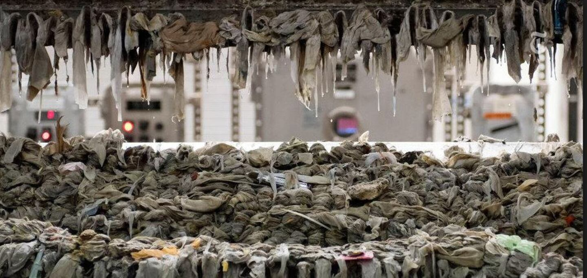
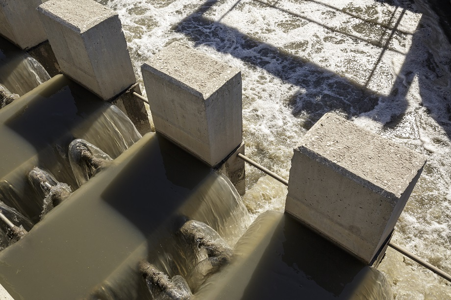
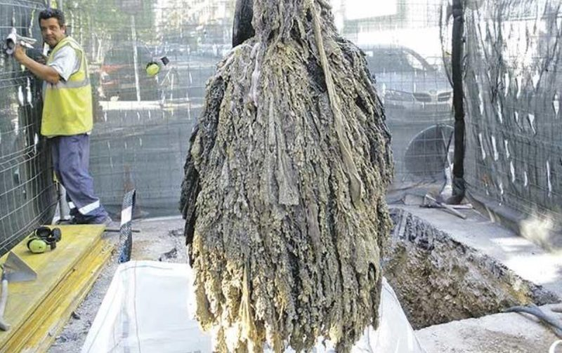
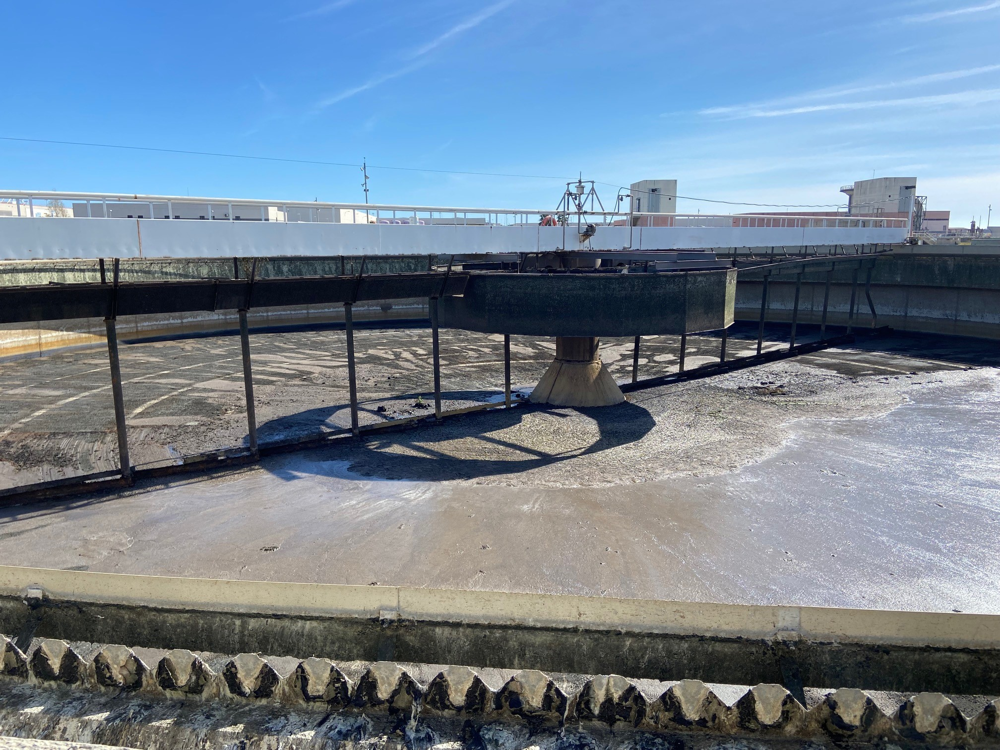
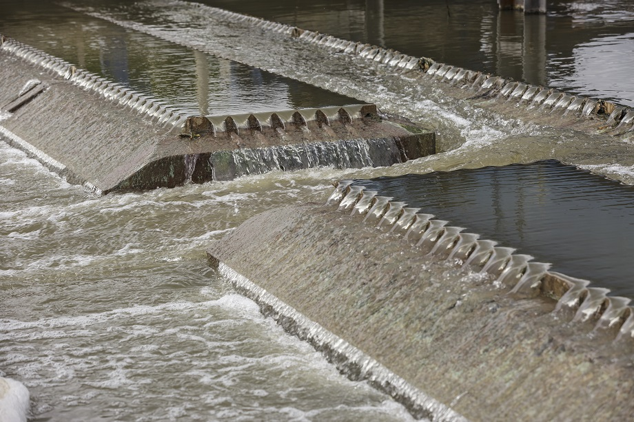
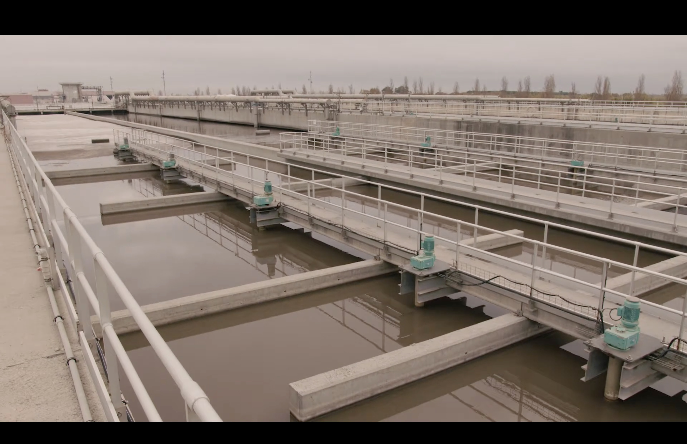
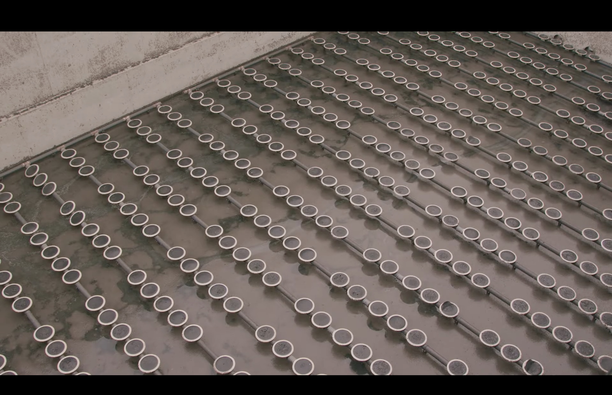
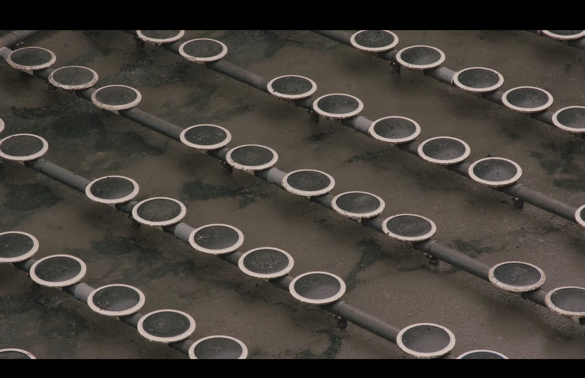
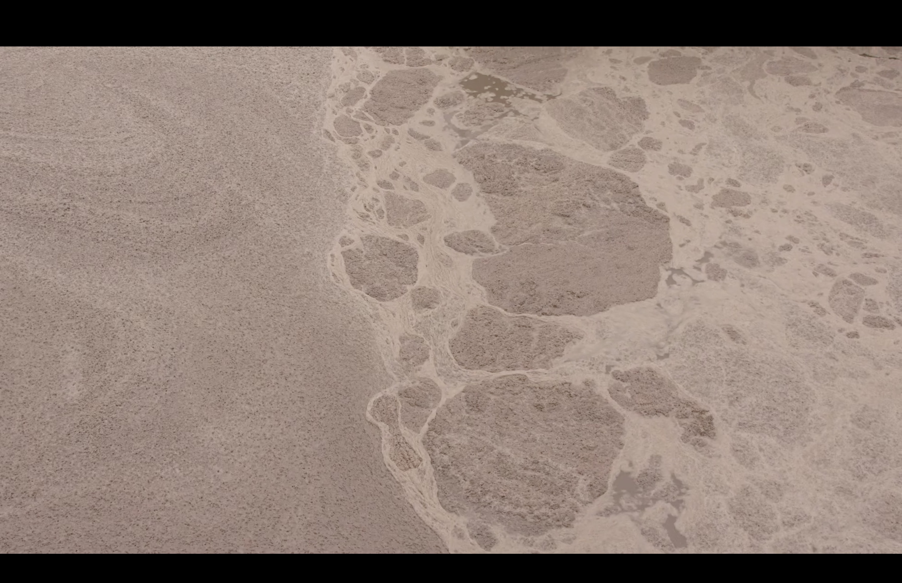
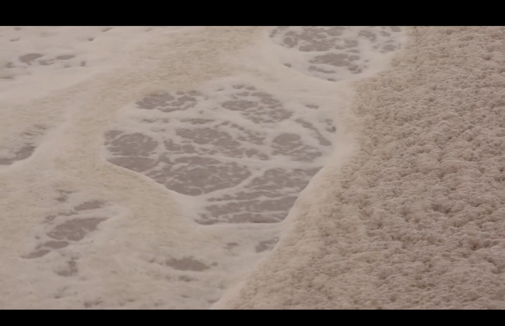
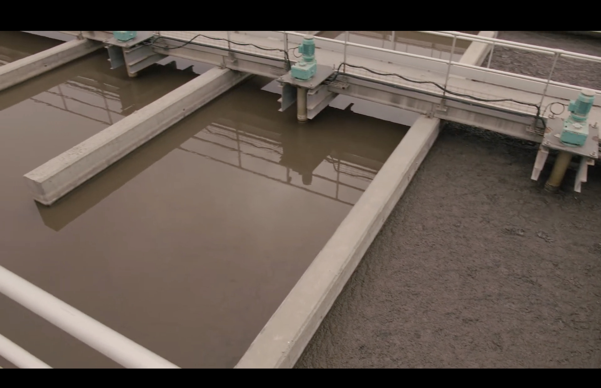
Contacto
Sara Nicolás, del área de comunicación y prensa, fue contactada durante el Plogging Congress. La propuesta es documentar una EDAR y seguir el agua desde su llegada cargada de residuos hasta el tratamiento, la regeneración y su salida.
Toallitas, microcontaminantes y lodos
Las toallitas húmedas y otros productos de higiene son uno de los sólidos impropios más problemáticos. Una caracterización difundida por Aigües sobre la EDAR Besòs encontró que cerca del 70% del material cribado correspondía a la fracción gruesa, compuesta principalmente por toallitas. La depuración convencional reduce sólidos, materia orgánica y nutrientes, pero los contaminantes emergentes —por ejemplo, restos de fármacos o cosméticos— exigen control y tratamientos cada vez más específicos.
El proceso también genera lodos. Después de estabilizarlos, pueden valorizarse, incluso en agricultura, convirtiendo parte de un residuo en recurso.
Contactos técnicos de EDAR
Un documento de Aigües de Barcelona fechado en 2022 identifica estas personas para solicitudes de muestras de lodos. No está verificado que sigan en el mismo puesto ni que sean directores actuales:
- EDAR Baix Llobregat — Claudia Carbonell · ccarbonell@aiguesdebarcelona.cat
- EDAR Besòs — Ignasi Batallé · ibatalle@aiguesdebarcelona.cat
- EDAR Sant Feliu — Marta Bronsoms · mbronsoms@aiguesdebarcelona.cat
- EDAR Gavà-Viladecans — Josep Gassó · jgasso@aiguesdebarcelona.cat
Todos figuran todavía como sin contactar. El primer paso será trabajar a través de Sara y del equipo de comunicación.